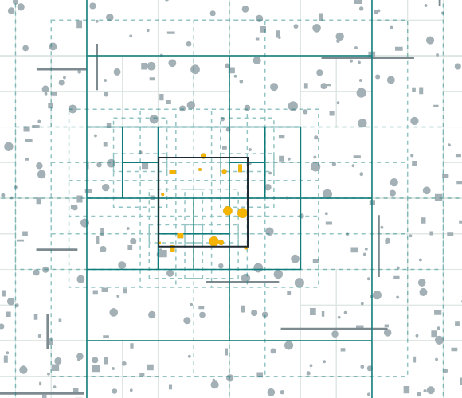
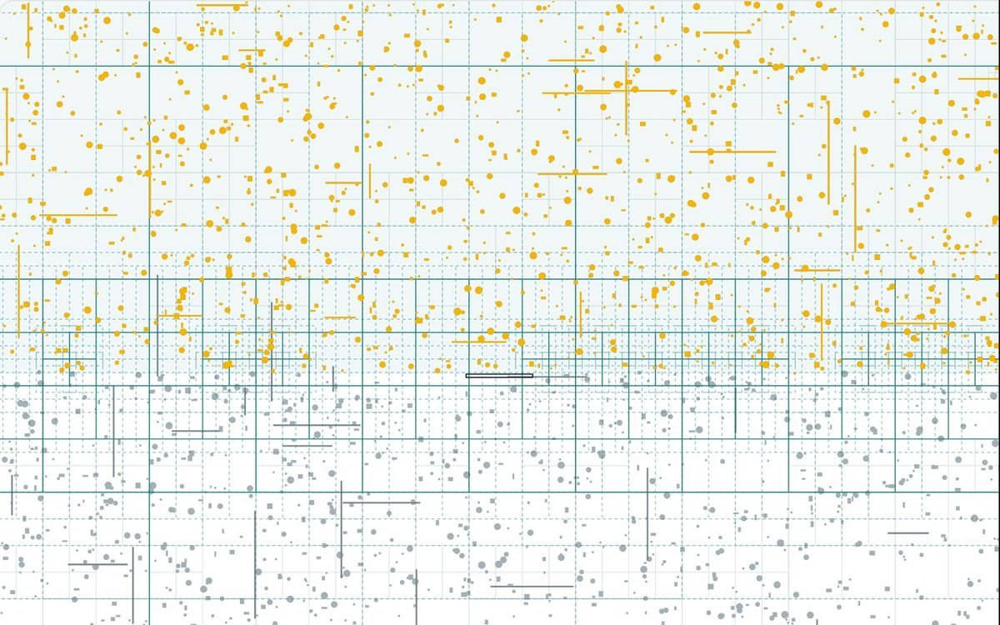

Как быстро найти фигуры рядом с данной — и почему обычного квадродерева для этого
мало.
Задача: отвечать, что рядом, быстро
Пересекается
Какие объекты задевают эту фигуру? Пуля и враг, взрыв и толпа.
В радиусе
Кто ближе, чем на r? Оружие ищет цель в радиусе стрельбы.
Выше и ниже
Какие объекты целиком над фигурой или под ней?
На лету
Объекты появляются, двигаются и исчезают — без перестройки всего с нуля.
Главное требование: время запроса не должно заметно расти, когда объектов
становится больше.
Простой способ — перебор всех объектов
1 000
объектов — 1 000 проверок на каждый запрос
1 000 000
объектов — миллион проверок, около 20 мс на один запрос
10 000²
если каждый из 10 000 врагов ищет соседей — 100 млн сравнений за кадр
Перебор прост и честен, но его время растёт вместе с числом объектов. Нужна структура,
которая сразу отбрасывает объекты, лежащие далеко от запроса, и смотрит только
на те, что рядом.
Квадродерево: делим мир на квадраты
Объекты падают по одному. Когда в ячейке становится тесно, она
делится на четыре — жёлтая вспышка.
Где густо — квадраты мелкие. Где пусто — остаются крупными.
Здесь ячейка держит 4 объекта, чтобы деление было видно. В библиотеке — 8.
Поиск заходит только туда, куда нужно
Перебор сравнивает запрос с каждым объектом — линия к
каждому.
Дерево заходит только в бирюзовые ячейки. Серые отброшены
целиком, не глядя внутрь.
То же самое в демо

Светло-серые линии — все ячейки дерева.
Бирюзовые рамки — ячейки, в которые зашёл
запрос.
Пунктир — их рыхлые области (о них
дальше).
Чёрный квадрат — запрос, он следует за мышью.
Жёлтые фигуры — найдены.
2 000 фигур на поле. Запрос проверил 37 записей и нашёл 14.
Через дерево — 16 мкс, перебором — 600 мкс.
Проблема: объект на линии раздела
Объект ездит туда-обратно. Пока он целиком в одной четверти — он лежит в ней.
Стоит ему задеть линию раздела — он
не помещается ни в одну четверть и застревает в корне.
Корень видит каждый запрос. Чем больше мир — тем больше линий и застрявших объектов.
Обычное и рыхлое дерево вживую
Одни и те же тайлы на сетке, один и тот же запрос.
Малиновые застряли наверху — их проверяет каждый запрос.
Решение: у каждой четверти есть запас
1. Четверть выбирается по центру объекта.
2. Её область шире на ¼ стороны — пунктир.
3. Влез в пунктир — спускается вниз. Наверху остаются только крупные.
В коде это одно число looseness: 0,25 — рыхлое дерево, 0 —
обычное. Так демо и замеры сравнивают «до» и «после» на одном и том же коде.
Почему поиск по рыхлым областям ничего не теряет
Жёлтый объект лежит в левой верхней четверти: его центр там, и он влез в её рыхлую
область (бирюзовый пунктир), хотя заходит за саму ячейку.
Рыхлая область ребёнка всегда внутри рыхлой области родителя (внешний
пунктир). Значит, всё поддерево лежит внутри рыхлой области его корня.
Поэтому правило поиска честное:
не задели рыхлую область узла — внутри точно нечего искать. Накрыли её
целиком — забираем всё поддерево без проверок.
Две фазы: сначала рамки, потом форма
Дерево хранит только прямоугольные рамки фигур —
сравнивать их дёшево.
У шара рамка — квадрат, её углы вне шара.
Жёлтая рамка без заливки — задет только угол, точная
проверка такого отсеивает.
Четыре вопроса к пространству
Метод
Что находит
findIntersections(фигура)
Всё, что пересекает фигуру. Касание тоже считается.
findAbove(фигура)
Всё, что целиком выше: нижний край объекта выше верхнего края фигуры. По X
ограничений нет.
findBelow(фигура)
Всё, что целиком ниже — так же, только наоборот.
findInRadius(точка, r)
Всё, до чего от точки не дальше r. Расстояние — до ближайшего края фигуры, а не до
центра.
space.findInRadius({ x: 15, y: 5 }, 5);
// стена: до её края ровно 5
Ось Y направлена вниз, как на экране. Фигуры: прямоугольник, круг, точка.
«Выше» находит полмира — и это честно дорого

Запрос «всё выше полоски» на 2 000 фигур находит 1 185 — больше половины.
Дерево — 420 мкс, перебор — 629 мкс. Почти одинаково.
Ответ из k объектов нельзя выдать быстрее, чем за k шагов. Дерево выигрывает, когда
запрос локальный, а результат небольшой.
Добавить, сдвинуть, удалить — без перестройки
add
Объект спускается от корня до своего узла. Если в узле стало больше 8 объектов,
делится только этот узел.
remove
Таблица «id → узел» сразу говорит, где лежит объект. Удаляем из одного узла. Если
четыре соседних узла почти опустели, они
склеиваются обратно.
update
Перемещение — это удаление и вставка. Индекс не следит за объектами сам: в игре
враги сначала двигаются, а потом индекс обновляется
один раз за кадр.
Каждая операция трогает один путь от корня до узла — это около log n шагов, а не n.
Мир не нужно знать заранее: корень растёт сам
Каждый новый объект — дальше прошлого. Если он не влезает, корень
удваивается в его сторону.
Старый корень целиком становится четвертью нового —
вспышка. Ни один объект не переносится.
Замер: запрос перестал зависеть от n
Сколько записей поштучно проверяет запрос 16×16. Мир растёт вместе с числом объектов.
19
17
1 000
44
17
10 000
151
16
100 000
356
15
1 000 000
Обычное дерево: 19 → 356, почти в 19 раз
больше.
Рыхлое: 17 → 15, стоит на месте.
Время на миллионе: 15 мкс у рыхлого против 21 мс у перебора.
Кадр игры: где индекс начинает окупаться
1
Враги делают шаг к игроку, индекс обновляется
2
Каждый враг ищет соседей, чтобы не налезать на них
3
6 стволов игрока ищут ближайшую цель
4
Граната задевает всех в радиусе
Самый тяжёлый — шаг 2. При 1 000 врагов перебор сравнивает каждого со
всеми: 1 000 × 1 000 = миллион сравнений за кадр.
С индексом каждый враг смотрит только на соседей рядом. Поэтому перебор растёт как
n², а индекс — почти линейно.
Врагов
С индексом, мс
Перебор, мс
100
0,65
0,23
1 000
3,0
5,2
3 000
18
38
10 000
87
368
Для плавной игры на кадр есть 16,7 мс. При 3 000 врагов с индексом это около
55 кадров в секунду, перебором — около 26: игра
заметно дёргается. А на 100 врагах индекс не нужен — перебор даже быстрее.
Где дерево не помогает
Большой ответ
Пример: «выше» на 2 000 фигур находит 1 185.
Дерево — 420 мкс, перебор — 629.
Почему: ответ из 1 185 объектов нельзя выдать
быстрее, чем выписав все 1 185.
Что делать: ничего, это предел любого способа. Дерево
нужно для вопросов «что рядом».
Мало объектов
Пример: в кадре игры со 100 врагами перебор быстрее
индекса: 0,23 против 0,65 мс.
Почему: дерево надо обновлять каждый кадр, а сотню
объектов и так сравнить быстро.
Что делать: на сотнях объектов обойтись перебором.
Огромные объекты
Пример: каждый десятый объект — в четверть мира. На
миллионе запрос занимает 1 066 мкс вместо 15.
Почему: такой объект не влезает в мелкую ячейку и
висит наверху — его проверяет почти каждый запрос.
Что делать: терпимо — это всё равно в 19 раз быстрее
перебора.
Почему запас ¼, а не ½, как в учебниках: с ½ соседние ячейки сильнее перекрываются, и
запрос заходит в лишние. На миллионе мелких объектов ¼ — 16 мкс, ½ —
28 мкс.
Две ошибки, которые нашлись при проверке
Объект через ноль
Как нашёл: демо упало, когда шар у края поля оказался
на координатах от −1 до 1. Край первого корня дерева всегда лежал на нуле, и такой
шар не помещался ни в один квадрат.
Исправил: угол корня берётся от угла самого объекта.
Узлы не склеивались
Как нашёл: замер памяти вкладки с демо — за 2 минуты
движения 6,7 → 9 МБ, узлов дерева 4 345 → 16 429.
Исправил: почти пустые узлы склеиваются обратно.
Память держится около 7 МБ.
На каждую теперь есть тест: на старом коде он падает, на исправленном проходит.
Вживую: узлы, которые не склеивались
Куча объектов кружит по миру.
Слева деление остаётся там, где куча прошла.
Справа пустые узлы склеиваются обратно.
Итог
Поиск не замедляется, когда объектов становится больше
Когда объектов миллион, запрос проверяет около 16 из них, а не все. Это 15
микросекунд вместо 21 миллисекунды у полного перебора.
Объекты можно добавлять, двигать и удалять на ходу
Дерево не перестраивается целиком — меняется только одна его ветка. Лишние ячейки
склеиваются обратно, поэтому память не растёт.
Четыре вида поиска
Что пересекается с фигурой, что выше неё, что ниже и что в радиусе от точки.
Проверено тестами: ответы дерева совпадают с полным перебором.
Код: github.com/mrDingoro/loose-quadtree · Демо и презентация:
mrdingoro.github.io/loose-quadtree